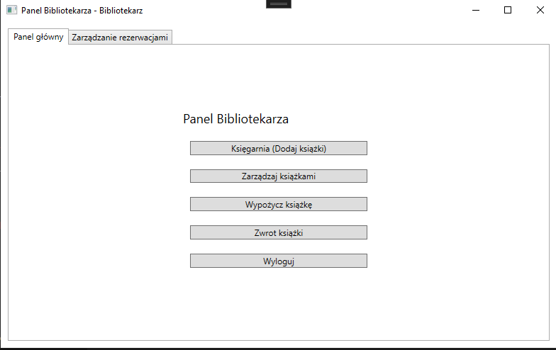
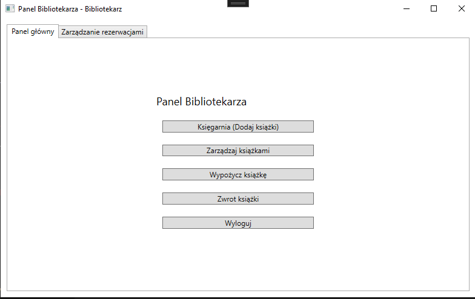
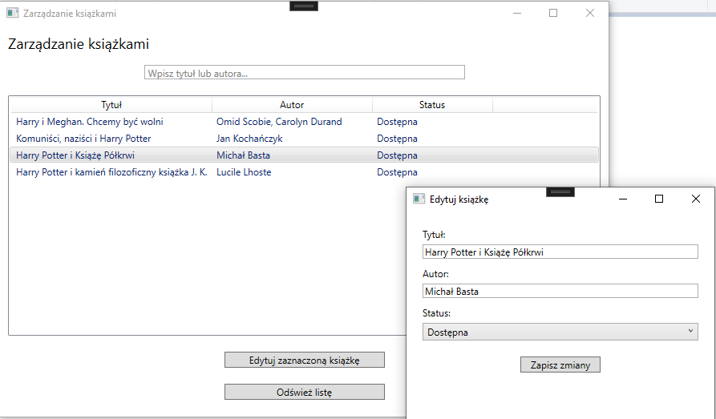
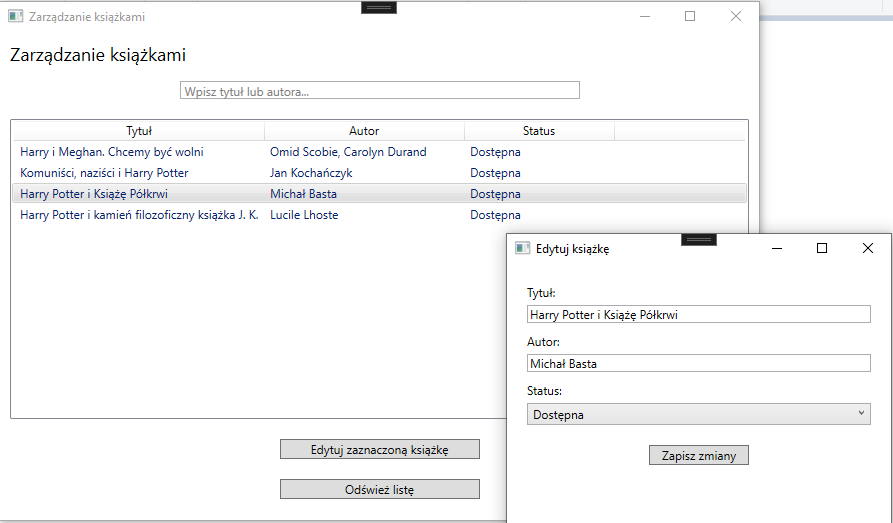
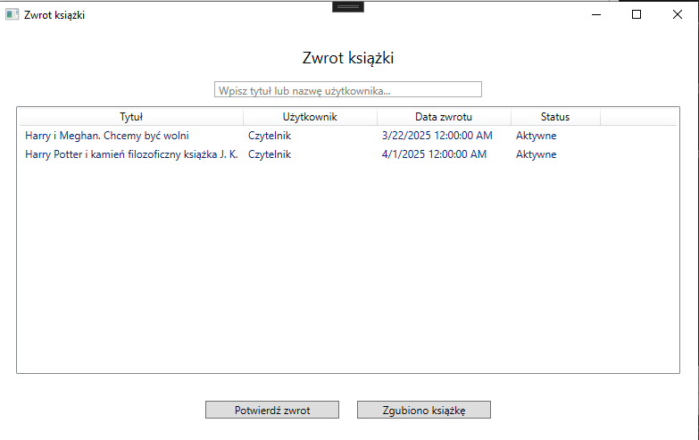
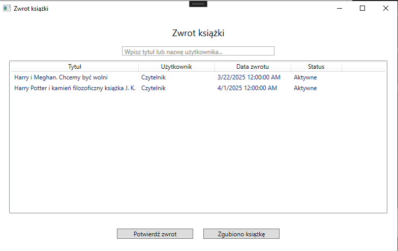
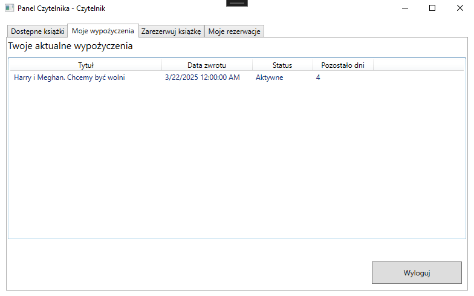
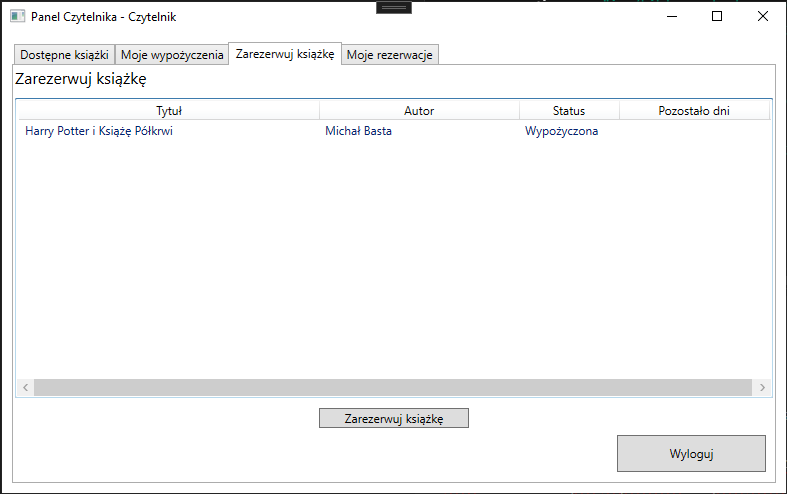
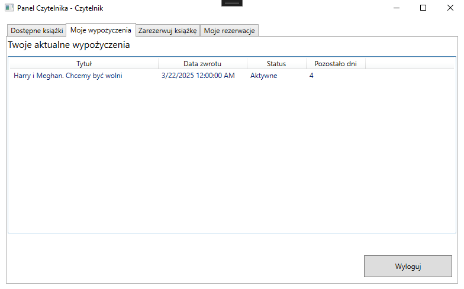
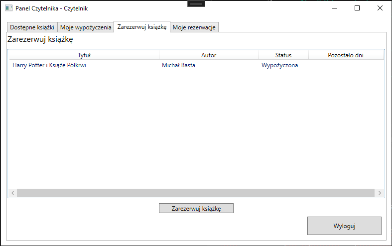

Library Manager to aplikacja desktopowa stworzona w
technologii WPF, służąca do zarządzania biblioteką. System obsługuje
trzy główne role: Administratora, Bibliotekarza i Czytelnika. Każdy z
nich posiada dedykowane funkcjonalności wspierające zarządzanie
zasobami bibliotecznymi oraz procesem wypożyczeń i rezerwacji.
Aplikacja wykorzystuje lokalną bazę danych SQL Server LocalDB oraz
integrację z zewnętrznym źródłem danych — Google Books API. Wzorzec
projektowy
MVVM zapewnia przejrzysty podział logiki biznesowej,
danych oraz interfejsu użytkownika, co czyni projekt elastycznym i
łatwym w rozbudowie.
Administrator
Administrator pełni kluczową rolę w zarządzaniu użytkownikami,
umożliwiając tworzenie kont Bibliotekarzy i Czytelników oraz
monitorowanie rezerwacji i wypożyczeń. Administrator może generować
raporty dotyczące funkcjonowania biblioteki.
Bibliotekarz
Bibliotekarz może dodawać nowe książki do bazy danych za pomocą
Google Books API, zarządzać książkami, realizować wypożyczenia oraz
przyjmować zwroty. Panel Bibliotekarza zawiera także funkcję
zarządzania rezerwacjami.
Czytelnik
Czytelnik może przeglądać dostępne książki, sprawdzać stan swoich
wypożyczeń oraz zarządzać rezerwacjami. System powiadamia go o
zbliżającym się terminie zwrotu oraz informuje, gdy zarezerwowana
pozycja jest gotowa do odbioru.

 


 

 


 


